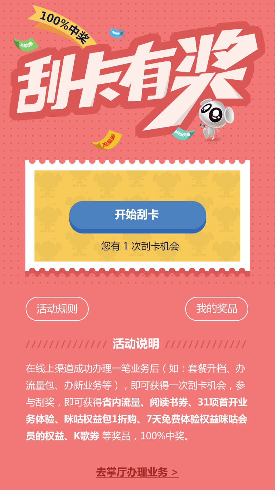

{% extends 'app.nunjucks' %}
{% block title %}浏览活动{% endblock %}
{% block content %}
<!--头部导航 start-->
<div class="headbar-sticky">
  <div class="aiui-headbar aiui-headbar__transparent aiui-headbar__fixed">
    <div class="aiui-headbar__item">
      <a href="javascript:history.back();" class="icon-return"></a>
    </div>
    <h3 class="aiui-headbar__title">浏览活动</h3>
  </div>
</div>
<!--头部导航 start-->


<div class="browse-tips">浏览活动页面<span id="Second">10</span>秒可获得2个阳光值</div>
{% endblock %}

{% block footer %}
<script>
  $(function () {
    //头部导航固定
    $(".headbar-sticky").sticky({ topSpacing: 0 });
    // 倒计时
    var t = 10;
    var timer = setInterval(function () {
      if (t <= 1) {
        clearInterval(timer);
        aiui.toast('浏览成功！<br>获得2个阳光值', {
          duration: 3000,
          className: 'aiui-toast--success'
        });
        $(".browse-tips").fadeOut(300);
      } else {
        t--;
        $("#Second").html(t);
      }
    }, 1000);

  });
</script>
{% endblock %}